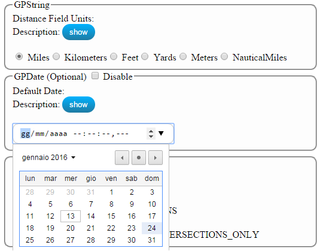

If you retrieve a task that requests a parameter as GPString, GPDate or GPRecordSet, the application
prepares a simple interface for allowing to you to define this parameter.
In this example, you must define a GPString parameter type that has got a choice list and a GPDate parameter type.

Then, the application generates two input fields: